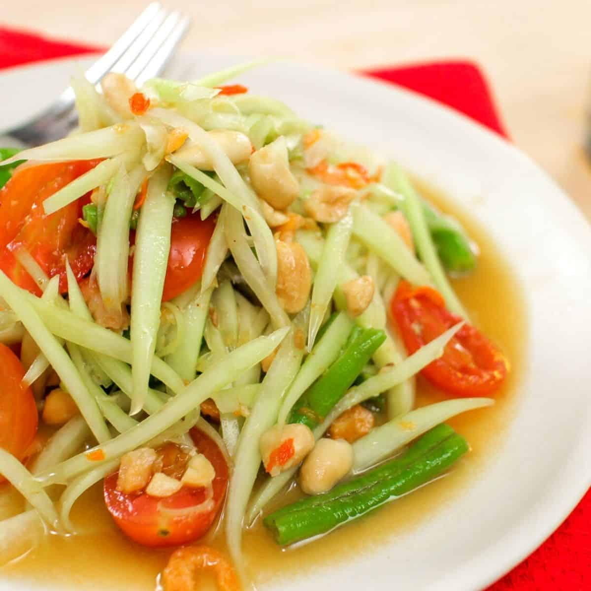

Green Papaya Salad

Description
If you're grilling some meat for dinner, and looking for a side that will make it a complete and
healthy meal, som tum is Thai people's go-to side dish. Crunchy green papaya is tossed with
fish sauce, palm sugar, tamarind paste and fresh lime juice. With a little (or a lot) of chilies for
that spicy flavor. Serve it with sticky rice or Thai coconut rice.
Ingredients
- 1 ½ cups julienned green papaya, soak in ice water for 10-15 minutes until they are firmer
(See video @1:20 on how to julienne green papaya)
- 2 cloves garlic
- Thai chilies, to taste
- 1 ½ Tbsp palm sugar, finely chopped, packed
- 2-3 long beans, cut into 2-inch pieces
- 3 Tbsp roasted peanuts
- 1 heaping Tbsp small dried shrimp, roughly chop if you have large ones
- 2 Tbsp fresh lime juice
- 2 tsp tamarind juice
- 1 ½ Tbsp fish sauce
- ½ cup grape tomato halves or a small tomato cut into wedges